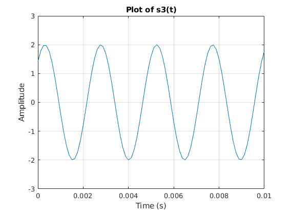
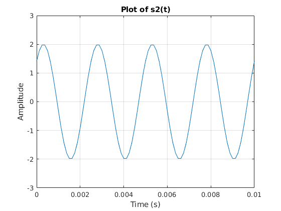
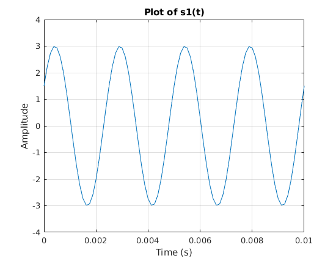
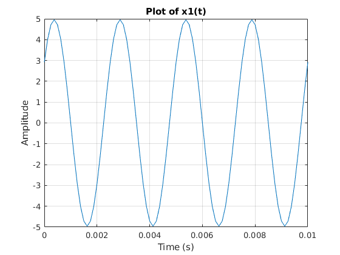
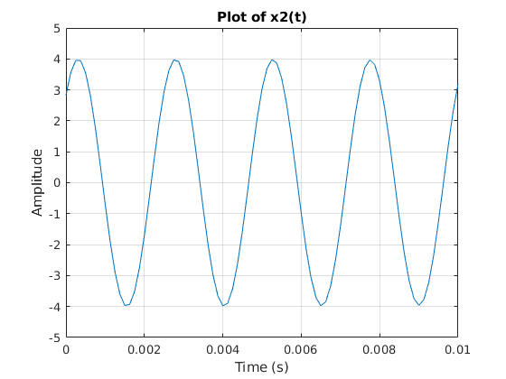
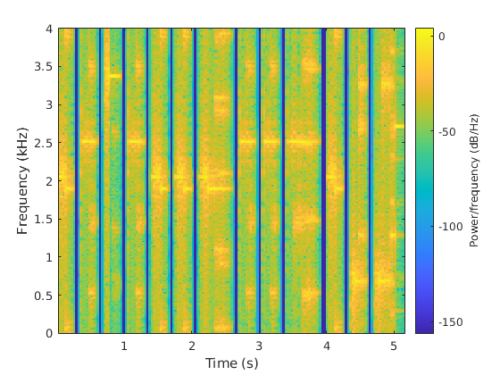
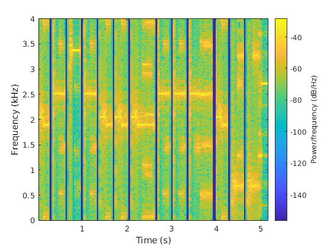
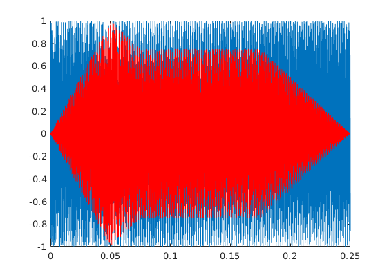
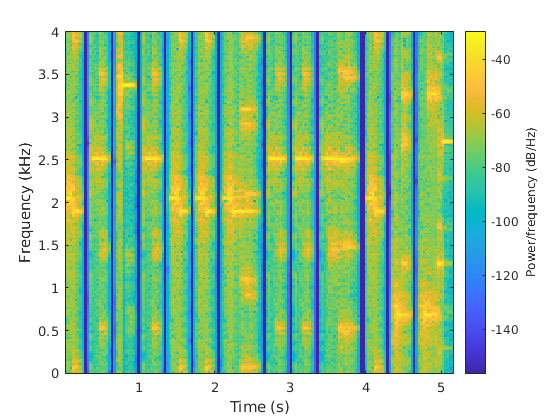

Contents
Exercise 2.1
tt = 0:1/8000:1;
s1 = 3*cos(800*pi*tt - pi/3);
s2 = 2 * cos(800 * pi * tt - pi/4);
s3 = 2 * cos(810* pi * tt - pi/4);
figure(1);
plot(tt,s1);
xlabel('Time (s)');
ylabel('Amplitude');
title('Plot of s1(t)');
grid on;
axis([0 0.01 -4 4]);
figure(2);
plot(tt,s2);
xlabel('Time (s)');
ylabel('Amplitude');
title('Plot of s2(t)');
grid on;
axis([0 0.01 -3 3]);
figure(3);
plot(tt,s3);
xlabel('Time (s)');
ylabel('Amplitude');
title('Plot of s3(t)');
grid on;
axis([0 0.01 -3 3]);
s1_scaled = s1/max(abs(s1));
s2_scaled = s2/max(abs(s2));
s3_scaled = s3/max(abs(s3));
audiowrite('s1.wav',s1_scaled,8000);
audiowrite('s2.wav',s2_scaled,8000);
audiowrite('s3.wav',s3_scaled,8000);
soundsc(s1_scaled,8000);
pause(2);
soundsc(s2_scaled,8000);
pause(2);
soundsc(s3_scaled,8000);
pause(2);
x1 = s1 + s2;
figure(4);
plot(tt,x1);
xlabel('Time (s)');
ylabel('Amplitude');
title('Plot of x1(t)');
grid on;
axis([0 0.01 -5 5]);
x2 = s2 + s3;
figure(5);
plot(tt,x2);
xlabel('Time (s)');
ylabel('Amplitude');
title('Plot of x2(t)');
grid on;
axis([0 0.01 -5 5]);
x2_scaled = x2/max(abs(x2));
soundsc(x2_scaled,8000);
pause(2);
    
Exercise 2.2
keys = [64 62 60 62 64 64 64 62 62 62 64 67 67];
Xs = [1 1 1 1 1 1 1 1 1 1 1 1 1];
start_times = [0 0.35 0.7 1.05 1.4 1.75 2.1 2.7 3.05 3.4 4 4.35 4.7];
end_times = [0.25 0.6 0.95 1.3 1.65 2 2.6 2.95 3.3 3.9 4.25 4.6 5.2];
fs = 8000;
x = build_song(keys, Xs, start_times, end_times, fs);
soundsc(x, 8000);
pause(2);
audiowrite('mary.wav',song,8000);
figure(4);
spectrogram(x,512,256,512,fs,'yaxis');
Xs = [0.1155 * exp(j * -2.1299)...
, 0.3417 * exp(j * 1.6727), 0.1789* exp(j * -2.5454) ...
, 0.1232 * exp(j * 0.6607), 0.0678 * exp(j * -2.0390) ...
,0.0473 * exp(j * 2.1597), 0.0260 * exp(j * -1.0467) ...
, 0.0045 * exp(j * 1.8581), 0.0020 * exp(j * -2.3925)];
x = build_song_wo_adsr(keys, Xs, start_times, end_times, fs);
audiowrite('mary_trumpet.wav',x,8000);
figure(5);
spectrogram(x,512,256,512,fs,'yaxis');
figure(6);
[ note tt ] = key_to_note (69 , 1 , 0.25 , fs ) ;
plot ( tt , note ) ;
hold on ;
plot ( tt , adsr ( note ) , 'r -') ;
hold off ;
x = build_song(keys,Xs,start_times,end_times,fs);
audiowrite('mary_trumpet_adsr.wav',x,8000);
figure(7);
spectrogram(x,512,256,512,fs,'yaxis');
type key_to_note
type build_song
type build_song_wo_adsr
type key_to_musical_note
type adsr.m
function [ x,t ] = key_to_note ( key , X , dur , fs )
% key_to_note : Produces a sinusoidal waveform corresponding to a
%given piano key number
% Input Args :
% key : number of the note ( key ) on piano keyboard
% X : phasor of sinusoid
% dur : duration of note ( in seconds )
% fs : A scalar indicating the sampling rate ( in Hz )
%
% Output :
% x : sinusoidal waveform of the note
% t : optional time vector
t = 0:1/ fs : dur ; % Time vector
f = 440 * 2^(key -69/12); % <========== complete this line
x = real (X* exp(j*2 *pi*f*t)); % <========== complete this line
end
function x = build_song ( keys , Xs , start_times , end_times , fs )
% build_song : This function takes in the input parameters used to describe
% a song, and outputs a sampled vector representing the signal of the song
%
% Input Args :
% keys : A length - N vector of key / note numbers , where
% N = number of notes in song
% Xs : A length - N vector of phasors
% start_times : A length - N vector of start times of notes
% ( in seconds )
% end_times : A length - N vector of end times of notes
% ( in seconds )
% fs : A scalar indicating the sampling rate ( in Hz )
%
% Output :
% x : A vector that holds the signal samples of the song built
len_in_samples = ceil(max(end_times)*fs) + 1; % the ceil function ensures a
% whole number is returned to define the size;
x = zeros(1,len_in_samples);
for i = 1: (length(keys))
note = key_to_musical_note(keys(i), Xs, end_times(i) - start_times(i), fs);
note = adsr(note);
start_in_samples = round(start_times(i) * fs) +1;
end_in_samples = start_in_samples + length(note) -1;
x(start_in_samples:end_in_samples) = x(start_in_samples:end_in_samples) + note;
end
end
function x = build_song_wo_adsr ( keys , Xs , start_times , end_times , fs )
% build_song : This function takes in the input parameters used to describe
% a song, and outputs a sampled vector representing the signal of the song
%
% Input Args :
% keys : A length - N vector of key / note numbers , where
% N = number of notes in song
% Xs : A length - N vector of phasors
% start_times : A length - N vector of start times of notes
% ( in seconds )
% end_times : A length - N vector of end times of notes
% ( in seconds )
% fs : A scalar indicating the sampling rate ( in Hz )
%
% Output :
% x : A vector that holds the signal samples of the song built
len_in_samples = ceil(max(end_times)*fs) + 1; % the ceil function ensures a
% whole number is returned to define the size;
x = zeros(1,len_in_samples);
for i = 1: (length(keys))
note = key_to_musical_note(keys(i), Xs, end_times(i) - start_times(i), fs);
start_in_samples = round(start_times(i) * fs) +1;
end_in_samples = start_in_samples + length(note) -1;
x(start_in_samples:end_in_samples) = x(start_in_samples:end_in_samples) + note;
end
end
function [x , t ] = key_to_musical_note( key , Xs , dur , fs)
% key_ t o _m u s ic a l _n o t e : Produces a musical node corresponding
% to a given piano key number
%
% Input Args :
% key : number of the note ( key ) on piano keyboard
% Xs : A vector contains the phasors of harmonics starting
% from the 1 st harmonic
% dur : duration of note ( in seconds )
% fs : A scalar indicating the sampling rate ( in Hz )
%
% Output :
% x : waveform of the note
% t : optional time vector
t = 0:1/ fs : dur ; % Time vector
f = 440 * 2^(key -69/12);%
x = zeros (1 , length ( t ) ) ; % create 0s vector for the sampled signal
num_harmonics = length ( Xs ) ; % number of harmonics
% instantiates the signal x with the sum of the harmonics
for n = 1: num_harmonics
x = x + real (Xs(n) * exp(j * 2 * pi * f * t));
end
end
function env_note = adsr ( note )
% This function smoothes out the transitions between the notes by adding
% decays and attack to subsequent notes
% Below are the parameters that specify the ADSR envelope
Pattack = .2; % Length of attack ( proportion )
Pdecay = .1; % Length of decay ( proportion )
Prelease = .3; % Length of release ( proportion )
Vattack = 1; % Attack maximum value
Vsustain = 0.75; % Sustain value
L = length ( note ) ; % Length of note signal
Lattack = floor ( L * Pattack ) ;% Length of attack
Ldecay = floor ( L * Pdecay ) ; % Length of decay
Lrelease = floor ( L * Prelease ) ; % Legnth of release
Lsustain = L - Lattack - Ldecay - Lrelease ; % length of sustain
% Generate the ADSR portions of the time weights
attack = linspace (0 , Vattack , Lattack ) ;
decay = linspace ( Vattack , Vsustain , Ldecay ) ;
sustain = linspace ( Vsustain , Vsustain , Lsustain ) ;
release = linspace ( Vsustain , 0 , Lrelease ) ;
% Concatenate to get time weight vector
weight = [ attack , decay , sustain , release ];
env_note = weight .* note; % Apply ADSR envelop to note
end
   